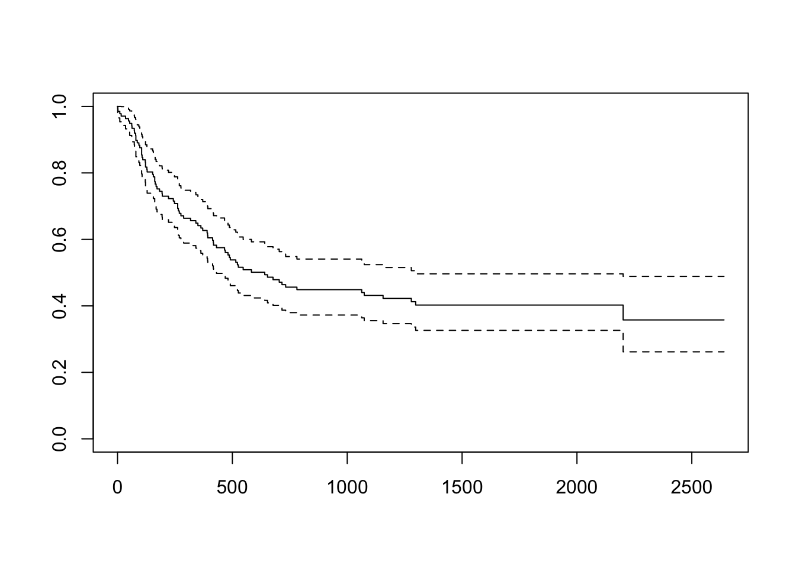
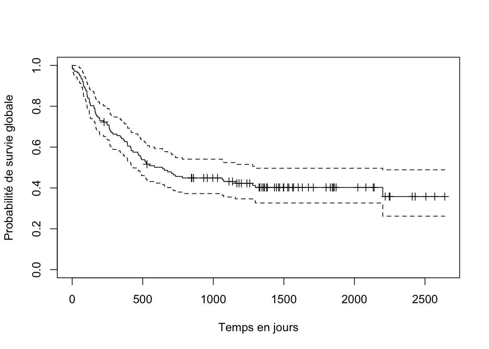
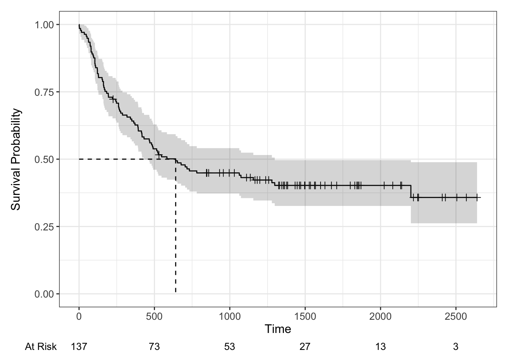

bone <- read.csv2("chemin/vers/data_bone.csv")
bone$dat_sel <- as.Date(bone$dat_sel, format = "%d/%m/%Y")
bone$date_dc <- as.Date(bone$date_dc, format = "%d/%m/%Y")
bone$ddn <- as.Date(bone$ddn, format = "%d/%m/%Y")
bone$date_rec <- as.Date(bone$date_rec, format = "%d/%m/%Y")
bone$date_fn <- as.Date(bone$date_fn, format = "%d/%m/%Y")
bone$date_cc <- as.Date(bone$date_cc, format = "%d/%m/%Y")
bone$date_ca <- as.Date(bone$date_ca, format = "%d/%m/%Y")2 Description de la survie
Si vous faites le TD avec Rstudio, la base de données doit avoir été importée avec les commandes suivantes :
2.1 Construction du délai de survie
La base de données bone est à nouveau déjà chargée. Dans cette partie, nous allons nous intéresser à la survie globale, c’est à dire au délai jusqu’au décès des patients.
La base ne met pas à disposition le délai jusqu’au décès du patient : ce délai doit être créé à partir des informations disponibles :
-
dat_sel: la date d’inclusion du patient = la date d’origine -
ddn: la date de dernière nouvelle du patient -
date_dc: la date de décès -
etat: l’état du patient aux dernières nouvelles
Par nature, la date de décès d’un patient met fin à son suivi. L’information contenue dans date_dc et ddn est donc en partie redondante : pour les patients décédés, la date de dernière nouvelle et la date de décès devraient être identiques.
Evaluez la cohérence du contenu des variables date_dc et ddn pour les patients décédés, en vérifiant que les colonnes date_dc et ddn ont la même valeur chez eux.
Montrez moi comment faire !
## Avec les commandes R de base
bone_dc <- bone[bone$etat == 1, c("date_dc", "ddn")] ## Sélection des patients
## décédés et des colonnes
## "date_dc" et "ddn"
head(bone_dc) ## Premières lignes
tail(bone_dc) ## Dernières lignes
table(bone_dc$date_dc == bone_dc$ddn, useNA = "ifany")
## Les dates de ces deux colonnes sont toutes identiques chez les individus décédés
## Même chose avec dplyr
# library(dplyr)
bone %>%
filter(etat == 1) %>%
mutate(same_date = date_dc == ddn) %>%
count(same_date)Voir le résultat
date_dc ddn
15 2012-12-08 2012-12-08
16 2012-12-15 2012-12-15
17 2012-08-01 2012-08-01
18 2012-04-07 2012-04-07
19 2013-11-28 2013-11-28
20 2012-04-20 2012-04-20 date_dc ddn
132 2012-11-05 2012-11-05
133 2013-08-13 2013-08-13
134 2012-09-27 2012-09-27
135 2012-11-10 2012-11-10
136 2013-01-05 2013-01-05
137 2013-03-31 2013-03-31
TRUE
81 same_date n
1 TRUE 81Quel est le contenu de la variable date_dc chez les patients vivants aux dernières nouvelles ?
Montrez moi comment faire !
bone_vv <- bone[bone$etat == 0, c("date_dc", "ddn")] ## Sélection des patients
## vivants et des colonnes
## "date_dc" et "ddn"
head(bone_vv)
tail(bone_vv)
table(bone_vv$date_dc, useNA = "ifany") ## Il n'y a que des NA. C'est normal !
## Même chose avec dplyr
# library(dplyr)
bone %>%
filter(etat == 0) %>%
count(date_dc)Voir le résultat
date_dc ddn
1 <NA> 2017-06-16
2 <NA> 2016-02-27
3 <NA> 2015-11-14
4 <NA> 2015-10-11
5 <NA> 2015-09-13
6 <NA> 2015-07-19 date_dc ddn
98 <NA> 2015-08-30
99 <NA> 2016-09-11
100 <NA> 2017-07-27
101 <NA> 2015-12-04
102 <NA> 2015-04-18
103 <NA> 2014-07-19
<NA>
56 date_dc n
1 <NA> 56Le délai à calculer est :
- la différence entre la date de décès et la date d’origine pour les patients décédés
- la différence entre la date de dernière nouvelle et la date d’origine pour les patients vivants
Comme la date de dernière nouvelle et la date de décès sont identiques en cas de décès, nous n’avons pas besoin de date_dc pour ce calcul.
En utilisant la fonction difftime(), calculez le délai de suivi de chaque patient en jours, et stockez le dans la base de données dans une variable nommée delsv. La fonction a trois arguments : time1 (la première date), time2 (la seconde date), et units (utilisez “days”).
Montrez moi comment faire !
Voir le résultat
dat_sel ddn delsv etat
1 2011-10-05 2017-06-16 2081 days 0
2 2011-10-09 2016-02-27 1602 days 0
3 2011-10-10 2015-11-14 1496 days 0
4 2011-10-10 2015-10-11 1462 days 0
5 2011-10-11 2015-09-13 1433 days 0
6 2011-10-11 2015-07-19 1377 days 0 dat_sel ddn delsv etat
132 2012-07-23 2012-11-05 105 days 1
133 2012-07-17 2013-08-13 392 days 1
134 2012-07-26 2012-09-27 63 days 1
135 2012-08-05 2012-11-10 97 days 1
136 2012-08-05 2013-01-05 153 days 1
137 2012-04-02 2013-03-31 363 days 12.2 Estimation de la survie globale par la méthode de Kaplan-Meïer
Nous avons tous les ingrédients nécessaires pour estimer la survie globale dans cet échantillon de patients.
Le package permettant de réaliser des analyses de données censurées dans R s’appelle survival. Il se charge avec la commande library(survival) (le package est déjà chargé dans ce TP, taper cette commande est donc inutile, mais il faudra le faire dans vos analyses).
La fonction qui permet de réaliser l’estimation de Kaplan-Meier s’appelle survfit(). Les paramètres de cette fonction sont une formule, puis la data.frame qui contient les données.
Lancez la commande ci-dessous.
Surv(delsv, etat) permet d’indiquer à la fonction le nom des variables contenant respectivement le délai de suivi, et le statut vis-à-vis de l’évènement à la fin de ce suivi. La partie ~ 1 est un peu particulière : elle ne sert pas à grand chose ici, mais modifier cette partie permettra plus tard d’estimer la survie globale selon certains sous-groupes.
Cette commande affiche quelques résultats : l’effectif n, le nombre de décès observés events, la médiane de survie median, ainsi que l’intervalle de confiance à 95% autour de cette médiane. Il s’agit bien sûr d’un affichage partiel… Il manque les probabilités de survie !
Stockez le résultat de la commande survfit() dans un objet appelé fit_km, puis appliquez la fonction summary() à cet objet.
Montrez moi comment faire !
fit_km <- survfit(Surv(delsv, etat) ~ 1, data = bone)
summary(fit_km)Voir le résultat
Call: survfit(formula = Surv(delsv, etat) ~ 1, data = bone)
time n.risk n.event survival std.err lower 95% CI upper 95% CI
1 137 1 0.993 0.00727 0.979 1.000
2 136 1 0.985 0.01025 0.966 1.000
10 135 1 0.978 0.01250 0.954 1.000
16 134 1 0.971 0.01438 0.943 0.999
35 133 1 0.964 0.01602 0.933 0.995
48 132 1 0.956 0.01748 0.923 0.991
53 131 1 0.949 0.01881 0.913 0.987
62 130 1 0.942 0.02003 0.903 0.982
63 129 1 0.934 0.02117 0.894 0.977
73 128 1 0.927 0.02222 0.884 0.972
74 127 1 0.920 0.02322 0.875 0.966
79 126 1 0.912 0.02415 0.866 0.961
80 125 2 0.898 0.02588 0.848 0.950
86 123 1 0.891 0.02668 0.840 0.944
93 122 1 0.883 0.02744 0.831 0.939
97 121 1 0.876 0.02817 0.822 0.933
105 120 3 0.854 0.03017 0.797 0.915
107 117 1 0.847 0.03078 0.788 0.909
110 116 1 0.839 0.03137 0.780 0.903
121 115 1 0.832 0.03193 0.772 0.897
122 114 2 0.818 0.03300 0.755 0.885
128 112 1 0.810 0.03350 0.747 0.879
129 111 1 0.803 0.03399 0.739 0.872
153 110 1 0.796 0.03445 0.731 0.866
156 109 1 0.788 0.03490 0.723 0.860
162 108 2 0.774 0.03575 0.707 0.847
164 106 1 0.766 0.03615 0.699 0.841
168 105 1 0.759 0.03653 0.691 0.834
172 104 1 0.752 0.03690 0.683 0.828
183 103 1 0.745 0.03726 0.675 0.821
194 102 1 0.737 0.03760 0.667 0.815
195 101 1 0.730 0.03793 0.659 0.808
222 100 1 0.723 0.03825 0.651 0.802
243 98 1 0.715 0.03856 0.644 0.795
248 97 1 0.708 0.03886 0.636 0.788
262 96 2 0.693 0.03943 0.620 0.775
265 94 1 0.686 0.03969 0.612 0.768
269 93 1 0.678 0.03995 0.604 0.761
276 92 1 0.671 0.04019 0.597 0.755
288 91 1 0.664 0.04042 0.589 0.748
318 90 1 0.656 0.04063 0.581 0.741
341 89 1 0.649 0.04084 0.574 0.734
350 88 1 0.642 0.04104 0.566 0.727
363 87 1 0.634 0.04122 0.558 0.720
371 86 1 0.627 0.04140 0.551 0.713
390 85 1 0.619 0.04156 0.543 0.706
392 84 1 0.612 0.04172 0.535 0.699
393 83 1 0.605 0.04186 0.528 0.693
414 82 1 0.597 0.04199 0.520 0.686
417 81 1 0.590 0.04212 0.513 0.679
418 80 1 0.583 0.04223 0.505 0.671
431 79 1 0.575 0.04234 0.498 0.664
466 78 1 0.568 0.04243 0.490 0.657
469 77 1 0.560 0.04252 0.483 0.650
481 76 1 0.553 0.04259 0.476 0.643
487 75 1 0.546 0.04266 0.468 0.636
491 74 1 0.538 0.04271 0.461 0.629
515 73 1 0.531 0.04276 0.453 0.622
522 72 1 0.524 0.04280 0.446 0.615
526 71 1 0.516 0.04282 0.439 0.607
547 69 1 0.509 0.04285 0.431 0.600
583 68 1 0.501 0.04287 0.424 0.593
641 67 1 0.494 0.04288 0.416 0.585
653 66 1 0.486 0.04288 0.409 0.578
677 65 1 0.479 0.04286 0.402 0.571
704 64 1 0.471 0.04284 0.394 0.563
716 63 1 0.464 0.04281 0.387 0.556
732 62 1 0.456 0.04277 0.380 0.548
781 61 1 0.449 0.04272 0.372 0.541
1063 52 1 0.440 0.04276 0.364 0.533
1074 51 1 0.432 0.04278 0.355 0.524
1156 48 1 0.423 0.04282 0.346 0.515
1279 42 1 0.413 0.04297 0.336 0.506
1298 41 1 0.402 0.04308 0.326 0.496
2201 9 1 0.358 0.05696 0.262 0.489R affiche maintenant les probabilités de survie survival (avec leur IC95%) à chaque temps de décès observé dans l’échantillon (time). La colonne n.risk est le nombre de sujets encore à risque au cours du temps. n.event vous indique le nombre de décès observés dans chaque intervalle de temps. Il est souvent utile de demander à R de n’afficher que certains temps précis. Pour cela, il suffit d’utiliser l’option times dans la commande summary.
Ajoutez times = c(0, 365, 730) à la commande summary.
Voir le résultat
Call: survfit(formula = Surv(delsv, etat) ~ 1, data = bone)
time n.risk n.event survival std.err lower 95% CI upper 95% CI
0 137 0 1.000 0.0000 1.000 1.000
365 86 50 0.634 0.0412 0.558 0.720
730 62 23 0.464 0.0428 0.387 0.556summary() n’est pas la seule fonction applicable aux résultats produits par survfit(). La fonction plot() permet de tracer la courbe de Kaplan-Meier.
Utilisez la fonction plot() sur l’objet fit_km.
Montrez moi comment faire !
plot(fit_km)Voir le résultat

Le graphique obtenu est la représentation des estimations de Kaplan-Meïer. Le graphique par défaut manque d’information. En continuant avec les fonctions de base du package survival, il est possible de rajouter quelques informations, notamment les temps de censure à droite, et des labels aux axes.
Ajoutez les temps de censures (option mark.time = TRUE), et des labels informatifs aux axes (options xlab = "mon label" et ylab = "mon label")
Montrez moi comment faire !
plot(fit_km, mark.time = TRUE, xlab = "Temps en jours",
ylab = "Probabilité de survie globale")Voir le résultat

Une alternative “tout-en-un” existe, et utilise le package ggsurvfit. Il permet d’ajouter beaucoup d’informations utiles au graphique (médiane de survie, nombre d’individus exposés au risque, etc)
Le code ci-dessous n’a pas besoin d’être modifié. Conseil : utilisez le raccourci clavier Ctrl-Enter pour lancer ces commandes ligne après ligne et regarder le graphique produit à chaque fois (et non le bouton “Run Code” qui affichera tous les graphiques d’un seul coup).
En vous basant sur le code ci-dessus qui explique chaque commande individuelle, construisez un graphique montrant à la fois les censures, l’intervalle de confiance, la médiane et le nombre d’individus exposés au risque
Montrez moi comment faire !
Voir le résultat

2.3 Indicateurs
Pour évaluer la qualité du suivi dans l’étude, on peut calculer quelques indicateurs importants.
2.3.1 Médiane de survie
Nous avons déjà représenté la médiane de survie graphiquement. Son estimation numérique est directement affichée par l’objet créé par survfit() :
2.3.2 Suivi médian
Le suivi médian demande un peu plus de travail ;-)
Pour l’obtenir, il faut de nouveau utiliser la fonction survfit() en inversant le rôle de l’évènement et de la censure.
Estimer le suivi médian
Montrez moi comment faire !
survfit(Surv(delsv, 1-etat) ~ 1, data = bone)Voir le résultat
Call: survfit(formula = Surv(delsv, 1 - etat) ~ 1, data = bone)
n events median 0.95LCL 0.95UCL
[1,] 137 56 1499 1384 1709En plus du suivi médian, on rapporte aussi souvent les bornes du suivi, c’est-à-dire :
- la durée observée de suivi maximale
- la durée observée de suivi minimale des patients vivants
Estimer les bornes du suivi (on utilisera notamment les fonctions max() et min())
Voir le résultat
Time difference of 2640 daysTime difference of 226 days max(delsv)
1 2640 days min(delsv)
1 226 daysBravo, vous avez terminé cette partie du TP !
Pour passer à la suite, appuyez sur le lien en bas à droite de cette page (ou sur la partie suivante à gauche) !